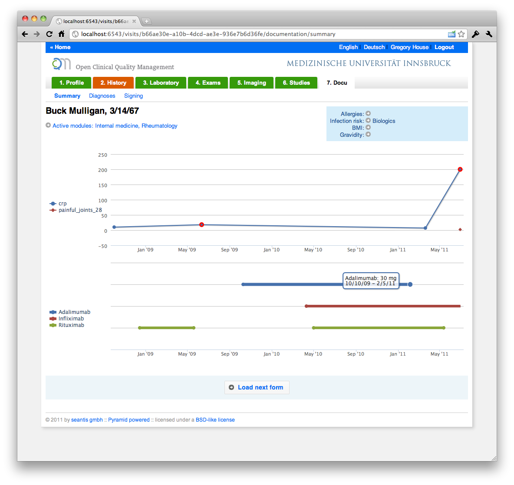

Blog
OCQMS - Full History of Changes and Notes


Notes can be added for each field. To keep the UI clean, the link to open notes is placed in a context menu. The menu unfolds when clicking on the icon next to the fields name. From the menu, notes can be added ("Add note"), additional information ("Information") about the field can be displayed and the the full history ("History") can be accessed.
Notes are added in a nice overlay window. After a note has been added, the note icon next to the field's label changes its color.

We think it's important to provide information to users including images with instructions or references to scentific publications.
From the context menu you can access the full history of all changes on the field level.

Getting Pyramid to work with uWSGI in a buildout environment
Setting up our first production server with ocqms proved to be somewhat tricky, as my own understanding of uWSGI, Pyramid and buildout was limited to say the least. We always run our python projects in virtual environments, but we often use it for nothing more than a container from which to run bootstrap.py
Bootstrapping our environment like this, we tell buildout to create it's own interpreter script which sets up the path before it runs the python interpreter. We do this by setting the interpreter argument of zc.recipe.egg to something like 'interpreter = py', giving us the bin/py script to work with.
Though I'm still not entirely convinced that this is the only way, or indeed the right way, it means that we have to setup the python paths ourselves, if we want to use uWSGI as our WSGI server. Or indeed any WSGI server.
The thing is, uWSGI provides a case for virtualenv. But it only sets the python path to a specified directory. From there python python can find all required packages in the standard site-packages sub-directory.
Unfortunately, in our environment the site-packages are in buildout's eggs directory, rendering this option useless for us.
So, to get uWSGI to run with the correct paths we had to do the following.
First, be sure that your uwsgi.ini or similar uses these parameters:
wsgi-file = /var/www/app/pyramid.wsgi
chdir = /var/www/app
post-buffering = 4096
This tells uWSGI to use the given WSGI script and to set the working dir prior to running it.
Note the post-buffering parameter. We had to use this to prevent a bug with pyramid and uwsgi where pyramid would not read the content of POSTs correctly. It probably has something to do with the following paste bug which seems to be fixed, but not yet included in the latest release:
http://trac.pythonpaste.org/pythonpaste/ticket/473
Anywho, having done that, create the pyramid.wsgi script as follows:
import sys, os
__this__ = os.getcwd()
def setup_python_path():
base = __this__
sources = os.path.join(base, 'src')
eggs = os.path.join(base, 'eggs')
paths = []
for src in os.listdir(sources)
paths.append(os.path.join(__this__, 'src', src))
for egg in os.listdir(eggs):
paths.append(os.path.join(__this__, 'eggs', egg))
sys.path[0:0] = paths
setup_python_path()
# uncomment the following if set up logging with your paster ini
# from paste.script.util.logging_config import fileConfig
# fileConfig('production.ini')
from pyramid.paster import get_app
application = get_app(os.path.join(__this__, 'production.ini'), 'app')
As you can see, this script, residing in the root of the buildout directory, gathers all the directories that need to be known by python and adds them to the sys.path.
The wsgi application is then set up using a paster configuration. Note that get_app expects the name of your app, defined in the ini, as the second argument.
With this set up you should then be able to run
uwsgi --ini /var/www/app/uwsgi.ini
EDIT
As unbit pointed out, this can actually be done much simpler by removing the setup_python_path function in the code above and adding the following lines to the uwsgi.ini
pythonpath = /var/www/app/eggs/*.egg
pythonpath = /var/www/app/src/*
Which does the same with less code and is therefore a superior way of doing it.
HTML5 Web App
Interessant ist schon mal die Bezeichung "App" welche man bei der Financial Times gewählt hat (http://app.ft.com). Offenbar kommt man um das Buzzword "App" nicht mehr herum.
Zweitens fällt ins Auge, wie aktiv komumniziert wird, wie der Besucher, die Seite zu seinem Home Screen hinzufügen kann.

Ich hatte auch schon die Vermutung, dass nach einer App schreiende Kunden im Prinzip nichts anderes wollen, als ein schönes Icon auf dem Home Screen. Eine App ist in diesem Fall dann nicht viel mehr als ein Bookmark auf eine Website.
Die FT erläutert sehr gelungen, warum sie sich gegen eine native App entschieden hat:
Why did the FT decide to create an HTML5 web app?
Creating an HTML5 app is innovative and breaks new ground – the FT is the first major news publisher to launch an app of this type. There are clear benefits. Firstly, the HTML5 FT Web App means users can see new changes and features immediately. There is no extended release process through an app store and users are always on the latest version.Secondly, developing multiple ‘native’ apps for various products is logistically and financially unmanageable. By having one core codebase, we can roll the FT app onto multiple platforms at once.
We believe that in many cases, native apps are simply a bridging solution while web technologies catch up and are able to provide the rich user experience demanded on new platforms. As these improve we expect to see more HTML5 apps and fewer native apps, but there is always likely to be a market for native apps for specific brands or when deeper integration with the hardware or super fast performance are required (games are the most obvious example).
Ein wichtiger Grund dürften aber sicherlicher die strengen Richlinien im App Store von Apple sein, welche die Verlage zwingen ihre Abos über die In-App- Schnittstelle zu vertreiben. Dabei verlieren die Verlage nicht nur den direkten Kontakt zu ihren Abonnenten sondern geben satte 30% an Apple ab.
Die native App is tot! Lange lebe die HTML5 Web App
Die native App ist tot! Lang lebe die HTML5 Web Cloud App (womit wir gleich drei inhaltlich sehr unscharfe Buzzword aneinander gereiht haben.)!
OCQMS - Prototype
OCQMS gibt es in einem ersten Prototypen, inklusive graphischer Oberfläche. In den nächsten Wochen werden wir intensiv an der Applikation weiterarbeiten, so dass bald eine erste Version in der Praxis getestet werden kann.



OCQM - Open Clinical Quality Management
Die wertvollen Erfahrungen, die wir im Rahmen der nationalen Rheumadatenbank in der Schweiz und deren Schwesterdatenbank in Dänemark gesammelt haben, werden wir in ein neues Projekt für die medizische Forschung einbringen.
Das Projekt ist noch in einem sehr frühen Stadium, wird jedoch über die nächsten Monate wachsen und dann auch versuchsweise in einem Universitätsspital eingesetzt werden.
OCQMS wird ein Clinical Quality Management System, welches rasch um Krankheiten erweitert und in weiteren Ländern eingesetzt werden kann.

Ein erster Entwurf des Datenmodells